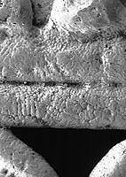

The scanning electron microscope allows us to see the textures on the surface of the gold, to find out how it was made. We can analyse the gold using X-rays, to find out how pure it is. We can also make very accurate measurements of size. For example, the "pillars" in the photograph are one half of one millimetre across.

By examining the earrings at a high magnification, we were able to see the dendrites in the microstructure. This showed that the earrings were cast. Along with our historical knowledge of the area, this allowed us to conclude that the goldsmiths used a technique known as lost-wax casting. The Sinú goldsmiths were very skilled at this. European goldsmiths made similar jewellery at this time but they used very different methods. They soldered together many pieces of gold, rather than casting an earring in one piece.
